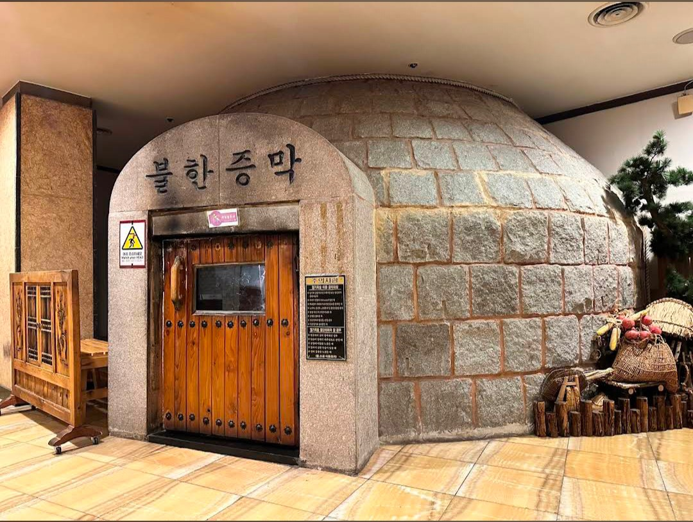

No entry into wet baths without showering first. No swimwear allowed.
Guidance
Your First Visit
Traditional Korean spas have a unique flow. Follow these six steps for a seamless experience.
1. Reception & Uniform
Pay your entry or package fee at the reception. You will receive a locker key (a wristband) and your sauna outfit (t-shirt and shorts).
2. Numbered Shoe Locker
Find the small shoe lockers near the entrance. Use the locker that matches your key number. Store your shoes, lock it, and keep the key on your wrist. From here, the spa is a barefoot zone.
3. Undress & Main Locker
Enter the gender-separated locker room. Find the large locker matching your key number. Undress completely and store all belongings here.
4. Mandatory Shower
Before entering any bath pool, you must shower thoroughly. Soap and shampoo are provided. Important: Swimwear and clothing are strictly prohibited in the bath areas.
5. Traditional Seshin Body Scrub
If you booked a scrub, soak in the hot bath for 10-15 minutes first to soften your skin. The scrub is performed fully nude by an expert practitioner (Seshinsa) in the bathhouse.
6. Co-Ed Sauna Lounge
Dry off, put on your sauna outfit, and head to the shared lounge. Here you can enjoy the kilns and themed rooms. If you wish to return to the baths, you must shower again first.
Safety & Pacing
How to Sauna
Respect the heat. Use these guidelines to ensure a restorative session without overexertion.
Hanjeungmak Kiln
Extreme infrared heat. Repeat 3–5 times. No clocks inside—listen to your body.
Salt Sauna
Softer heat. If sweating heavily, sit instead of lying down to protect the mineral floor.
Hydration
Drink plenty of water or traditional Sikhye between sessions to stay hydrated.
Cool Down
Allow your body temperature to normalize in the lounge before your next session.

Etiquette
House Rules
Mandatory Shower
No Alcohol
Strictly no entry after consuming alcohol for safety reasons.
Health Caution
High blood pressure or heart conditions? Please avoid high-heat kilns.
No Outside Food
Please enjoy refreshments from our on-site snack counter only.